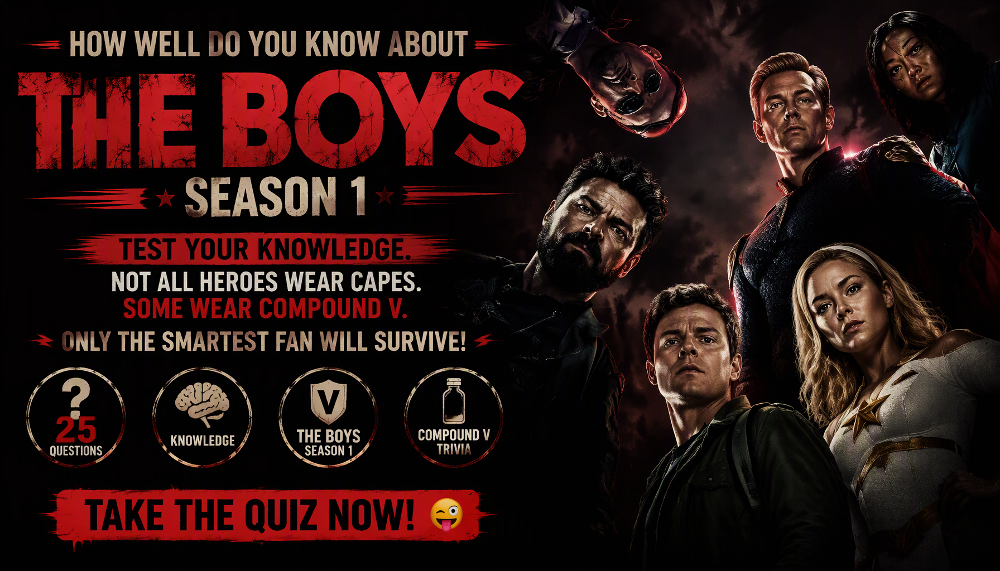

THE BOYS • TV SERIES • SEASON 1 TRIVIA
The Boys Season 1 Quiz
Think you know The Boys Season 1? Test your knowledge of Homelander, Billy Butcher, Hughie Campbell, Starlight, the Seven, Compound V and the dark secrets hidden behind Vought's superhero empire.
Every question has one correct answer. Choose carefully and see how well you remember the characters, conspiracies, shocking revelations and major events from Season 1.
This quiz contains major story details and spoilers from The Boys Season 1.


ABOUT THE QUIZ
The The Boys Season 1 Quiz is a 25-question trivia challenge for fans of the superhero satire series. It explores the world of Vought International, where powerful Supes are marketed as heroes while corruption and dangerous secrets hide behind their public image.
The questions cover Homelander, Billy Butcher, Hughie Campbell, Annie January (Starlight), Queen Maeve, A-Train, the Deep, Frenchie, Mother’s Milk and other important characters.
The quiz also tests your memory of Compound V, Vought's secret experiments, Translucent's capture, the Flight 37 disaster and the major revelations of the Season 1 finale.
The Boys Season 1 Details
Series: The Boys
Season: 1
Episodes: 8
Genre: Superhero satire, action, drama and dark comedy
Central Conflict: A group of ordinary people takes on corrupt superheroes and the corporation protecting them.
Major Storylines: Hughie's recruitment into the Boys, Butcher's search for Becca, Starlight's experience with the Seven, Vought's Compound V conspiracy and Homelander's increasingly disturbing actions.
WHAT THIS QUIZ COVERS
The questions cover characters, superhero abilities, relationships, secret experiments, memorable events and major revelations from Season 1.
The Boys and Their Investigation
Test your knowledge of Billy Butcher, Hughie Campbell, Frenchie and Mother’s Milk as they investigate Vought and expose the darker side of the superhero business.
The Seven and Their Powers
Remember Homelander, Starlight, A-Train, Queen Maeve, the Deep, Translucent and Black Noir, including their abilities, relationships and actions.
Compound V and Vought's Secrets
Questions explore Compound V, the creation of Supes, Vought's corporate leadership and the secret experiments that underpin the company's public superhero empire.
Memorable Events and Disasters
Recall Translucent's capture, the Flight 37 disaster, the mayor's plane, the Believe Expo and the events that expose the difference between superheroes' public image and reality.
Becca and the Season Finale
The quiz covers Butcher's missing wife Becca, Jonah Vogelbaum's connection to Homelander and the revelations surrounding Ryan at the end of Season 1.
HOW THE QUIZ WORKS
The quiz contains 25 questions. Every question has four possible choices, but only one answer is correct. Read each question carefully and select the answer you believe is correct.
Each correct answer gives you 1 point, while an incorrect answer gives you 0 points. Your final score is converted into a percentage out of 100%.
Your result represents how well you remember the characters, Supes, conspiracies and events of The Boys Season 1.
Quiz Navigation
Starting the Quiz
Select START QUIZ on the opening screen to begin. The first question will appear with four possible answers.
Selecting an Answer
Read all four choices before making your decision. Select the answer you believe is correct. The quiz automatically moves to the next question shortly after you select an answer.
Next and Back Buttons
Use Next to move forward and Back to revisit an earlier question. Your previous answer remains selected when you return to a question.
Finishing the Quiz
Answer all 25 questions to complete the quiz. Submit your answers on the final question to see your score, accuracy and knowledge level.
Try Again and Challenge Friends
Select TRY AGAIN to replay the quiz. You can also share your result or challenge friends to see who remembers more details from Season 1.
FAQ
How many questions are in the quiz?
There are 25 questions in total, and every question has four possible choices.
What is the maximum score?
The maximum result is 100%. Each correct answer contributes one point before the score is converted into a percentage.
What topics are covered?
The quiz focuses on The Boys Season 1, including Homelander, Billy Butcher, Hughie, Starlight, the Seven, Compound V, Vought International and major plot developments.
Can I take the quiz again?
Yes. Select TRY AGAIN after completing the quiz to start another attempt and improve your score.
Can I challenge my friends?
Yes. Select CHALLENGE YOUR FRIENDS after completing the quiz to share the challenge.
Spoiler Warning
This quiz contains spoilers for The Boys Season 1. Questions may reveal character relationships, deaths, secret identities, corporate conspiracies and major developments from the season.
If you have not watched Season 1, consider watching it before taking the quiz to avoid having important story details spoiled.